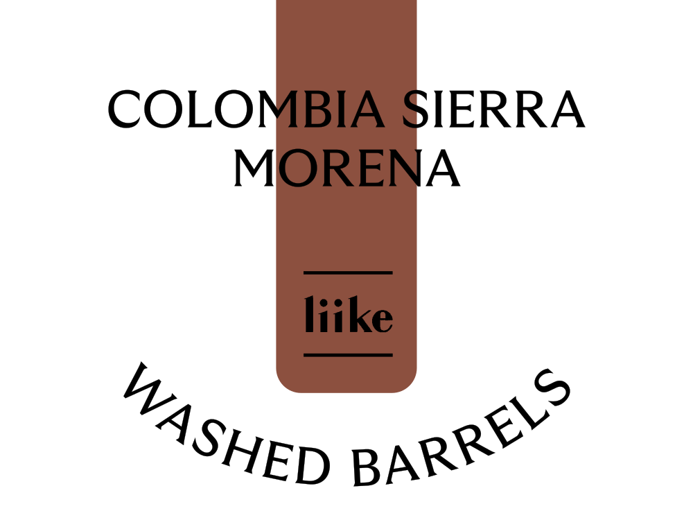
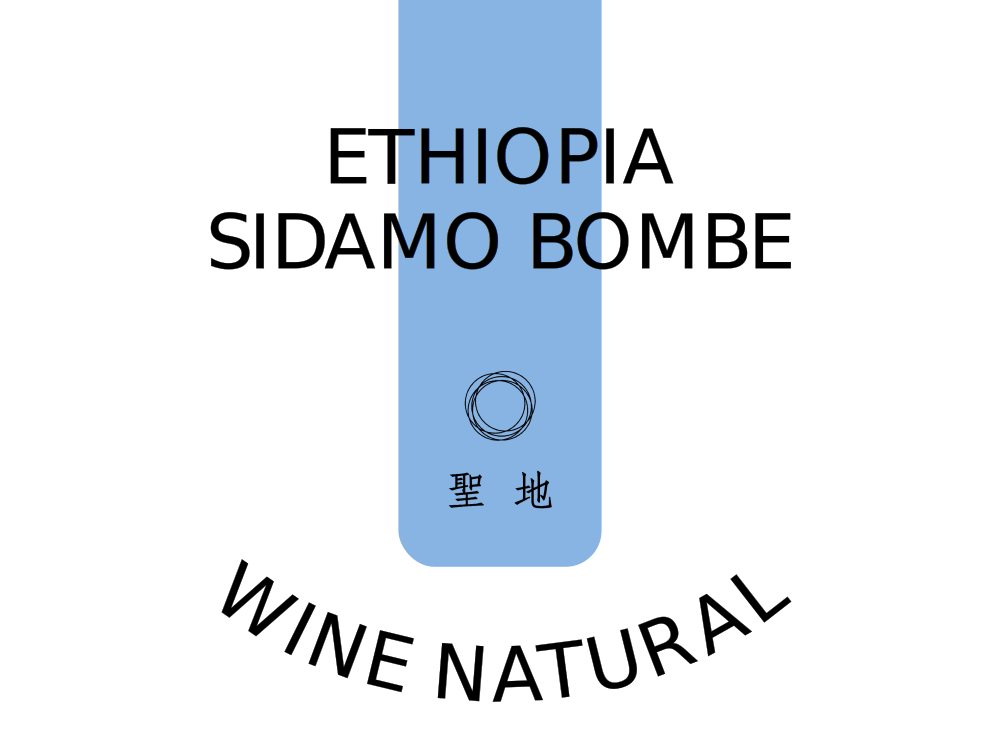

기호 식품의 수준은 그 국가의 문화 수준을 반영한다고 합니다. 음악, 미술 등 문화는 발전을 거듭하며 다양한 장르로 세분화됩니다.
대표적인 기호 식품 커피 산업도 끊임없이 발전하고 있습니다. 특히 생산 농가와 커피 업계의 노력으로 제조 공법이 다양해지고 있습니다.
최근 들어 다양한 발효 방식을 적용해 다채롭고 선명한 향미를 가진 커피가 탄생하고 있습니다.
10월에는 특수한 공법을 거쳐 ‘술 같은 풍미’를 품은 커피 2종을 수집해 소개 드립니다.
앞으로 특수 가공된 커피가 새로운 커피의 장르로 자리 잡을 수 있을지, 직접 체험해보시길 바랍니다.

| 와인 같은 달큰한 매력의 커피 |
| 농장 |
Bombe |
| 지역 |
Ethiopia, Bombe, Bensa, Sidamo |
| 품종 |
Heirlooms |
| 가공 |
Wine Natural
(Anaerobic Natural) |

| 에티오피아 시다모 봄베 와인 내추럴 |
|
선선한 가을이면 생각나는 와인이 떠오르는 커피입니다. 옅은 레드 와인의 향취, 절인 체리 같은 달큰한 향미가 매력적입니다. 과하지 않은 향미를
가진 커피를 선호하시면
이 커피를 추천드립니다.
로스팅: 聖地(카페성지)
|
| 위스키 같은 강렬한 매력의 커피 |
| 로트 |
Sierra Morena |
| 지역 |
Colombia, Risaralda, Pereira |
| 품종 |
Castillo, Caturra |
| 가공 |
Washed - Barrels |
| 콜롬비아 시에나 모레나 워시드 베럴 |
|
위스키 배럴에서 발효시킨 커피입니다. 위스키와 체리의 향미를 잘 머금고 있습니다. 개성이 뚜렷한 커피를 선호하시면 이 커피를 추천드립니다.
로스팅: liike (리이케, 서울 성북구)
|